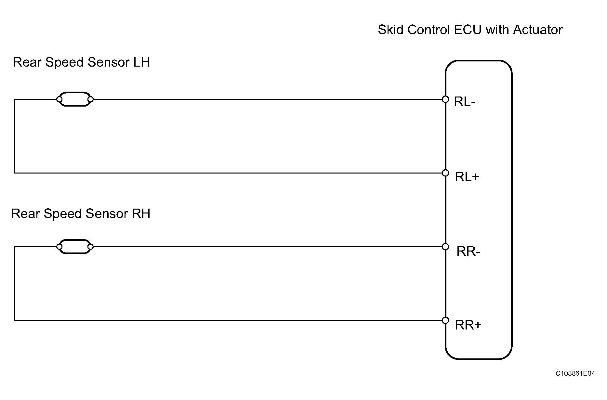

DTC C0210/33 Right Rear Wheel Speed Sensor Signal Malfunction; DTC C0215/34 Left Rear Wheel Speed Sensor Signal Malfunction; DTC C1238/38 Foreign Object is Attached on Tip of Rear Speed Sensor RH; DTC C1239/39 Foreign Object is Attached on Tip of Rear Speed Sensor LH; DTC C1273/73 Low Output Signal of Rear Speed Sensor RH (Test Mode DTC); DTC C1274/74 Low Output Signal of Rear Speed Sensor LH (Test Mode DTC); DTC C1277/77 Abnormal Change in Output Signal of Rear Speed Sensor RH (Test Mode DTC); DTC C1278/78 Abnormal Change in Output Signal of Rear Speed Sensor LH (Test Mode DTC): Wiring Diagram

Courtesy of © TOYOTA, LICENSE AGREEMENT TMS1002